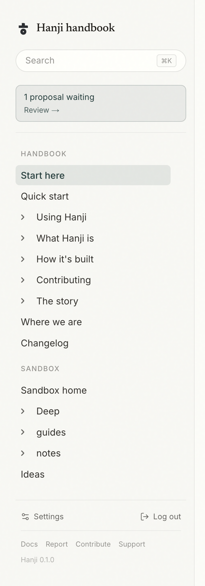

Mounts
A mount is one git repository, or one folder inside it, brought into Hanji's tree. You can have many. Together they form the single knowledge base that people and agents read.

Adding one
pnpm hanji add-mount <name> <repoUrl> <mountPath> [subpath] [--suggest]
nameis how you refer to the mount, and it is the token scope that grants access to it.repoUrlis any git URL Hanji can clone: an SSH remote, an HTTPS remote, or a local path.mountPathis where it lives in the tree, the first segment of every page's address.subpathis optional. Give it to mount only a folder of the repo, so the rest of the repository stays out of the knowledge base.
# a whole repo
pnpm hanji add-mount notes git@github.com:you/notes.git notes
# only the docs/ folder of a larger repo
pnpm hanji add-mount handbook git@github.com:you/product.git handbook docs
Keeping in sync
Hanji reads from a local clone and serves from a local index. To pull the latest from a mount's remote and reindex, sync.
pnpm hanji sync # fetch every mount and reindex what changed
pnpm hanji rebuild # throw the index away and rebuild it from the clones
pnpm hanji list # show every mount and how many pages it holds
rebuild is safe to run any time. The index is a cache, so nothing you care about lives only there. If it ever looks wrong, rebuild it and it is correct again.
Changes arrive on their own
Manual sync works, but a knowledge base should not need asking. Two mechanisms, both optional, both feeding the same sync:
Push-to-sync. Set HANJI_WEBHOOK_SECRET in the web front's environment, then add a webhook to the repository (GitHub: repo → Settings → Webhooks): payload URL https://<your-hanji>/api/webhook/git, content type JSON, the same secret. Every push to the mount's branch syncs the matching mount seconds later. Hanji answers deliveries immediately and does the git work in the background, so a slow clone never trips the sender's timeout. Deliveries are verified against the secret's signature; without the secret set, the endpoint does not exist.
The poll loop. Set HANJI_POLL_SECONDS=300 and the web front syncs every mount on that interval. This is the mechanism for a tailnet, which a webhook cannot reach from the outside - see On your tailnet - and it also covers local mounts, picking up edits made outside Hanji entirely. A slow sync skips a beat rather than stacking; a failing one logs and tries again next round.
Any mix works: webhooks where the network allows, polling where it doesn't, pnpm hanji sync whenever you want it now.
Direct and suggest mounts
By default a mount is direct: the owner's edits in the front are written straight to git as commits. Pass --suggest and the mount becomes suggest-only: direct writes are refused, and every change has to arrive as a proposal instead.
Suggest mounts are for repositories where nothing should change without review, even from the owner. On a suggest mount the editor's Update reads Propose, for people and agents alike, and every change waits in the same review card. See Proposals.
Once your mounts are in place, read Reading and writing to use the front, or Agents to connect a coding agent.